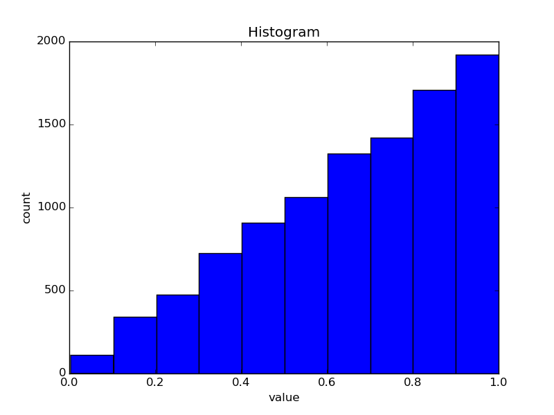
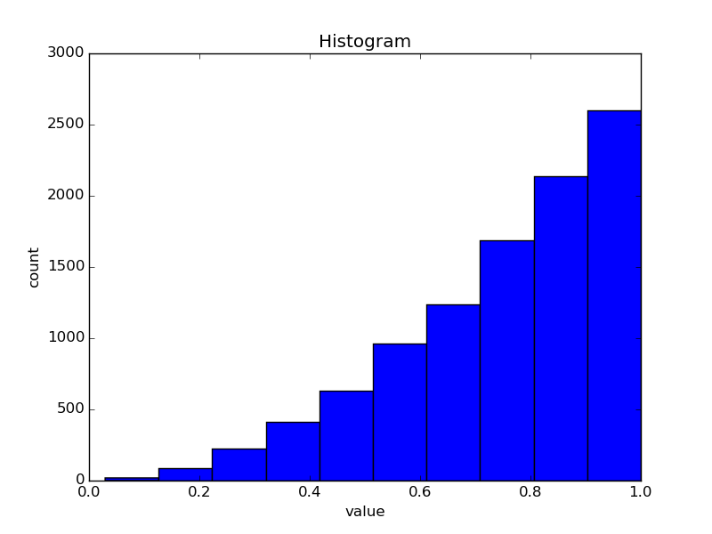
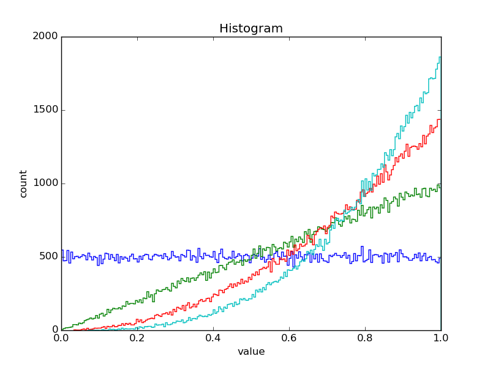

I just wanted to solve an exercise where I had random variables $X_1, \dots, X_n$ which were all $U([0, 1])$ distributed and $Y_n = \max(X_1, \dots, X_n)$.
I wondered what the distribution of $Y_n$ is (for big $n$), so I wanted to plot it. How do I plot it? With Python, of course ☺
Here is the program:
#!/usr/bin/env python
import matplotlib.pyplot as plt
import numpy.random
def main():
# Generate Data
n = 10000
numbers_a = numpy.random.uniform(size=samples)
numbers_b = numpy.random.uniform(size=samples)
numbers_c = numpy.random.uniform(size=samples)
numbers_max = [max(a, b, c) for a, b, c in zip(numbers_a, numbers_b, numbers_c)]
# Plot data
plt.hist(numbers_max)
plt.title("Histogram")
plt.xlabel("value")
plt.ylabel("count")
plt.show()
if __name__ == "__main__":
main()
and here is the plot for $n = 2$
{kind=link}

If you increase to $n = 3$ you get:
{kind=link}

Improved version
I've also created an improved version which makes nicer plots, but might be harder to read:
#!/usr/bin/env python
import matplotlib.pyplot as plt
import numpy.random
def main(samples, n):
# Generate Data
numbers_l = []
n = n + 1
for _ in range(n):
numbers_l.append(numpy.random.uniform(size=samples))
# Plot data
plots = []
for i in range(1, n):
# Build data structure
sublist = numbers_l[:i]
max_list = numbers_l[0]
for numbers_list in sublist:
for i, el in enumerate(numbers_list):
max_list[i] = max(max_list[i], el)
plot_i = plt.hist(max_list, histtype="step", bins=200)
plots.append(plot_i)
plt.title("Histogram")
plt.xlabel("value")
plt.ylabel("count")
plt.show()
def get_parser():
from argparse import ArgumentParser, ArgumentDefaultsHelpFormatter
parser = ArgumentParser(
description=__doc__, formatter_class=ArgumentDefaultsHelpFormatter
)
parser.add_argument("-n", dest="n", default=3, type=int, help="n")
parser.add_argument(
"-s",
"--samples",
dest="samples",
default=1000,
type=int,
help="number of samples per Y_n",
)
return parser
if __name__ == "__main__":
args = get_parser().parse_args()
main(args.samples, args.n)
When you call this script with
$ ./plot-random-variable.py -n 4 --samples 100000
it gives
{kind=link}
